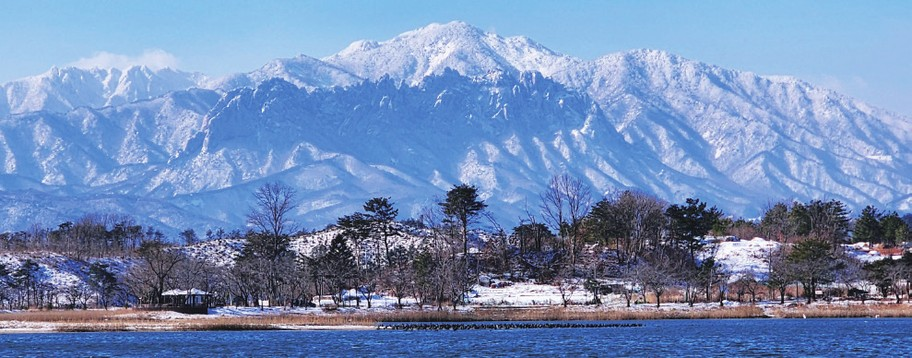
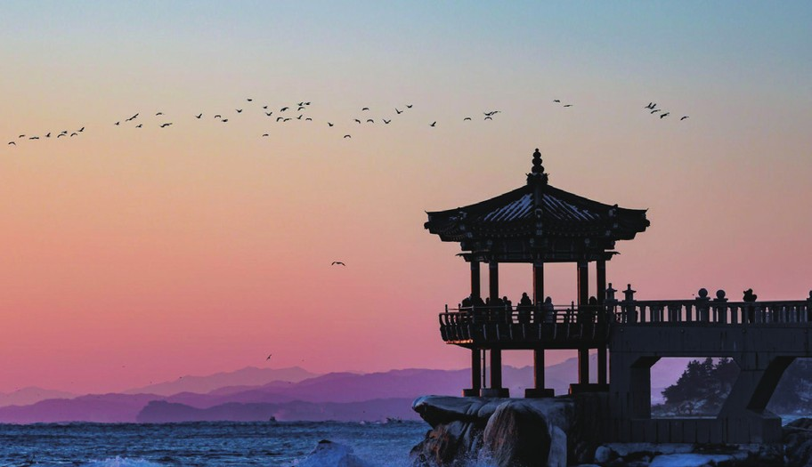
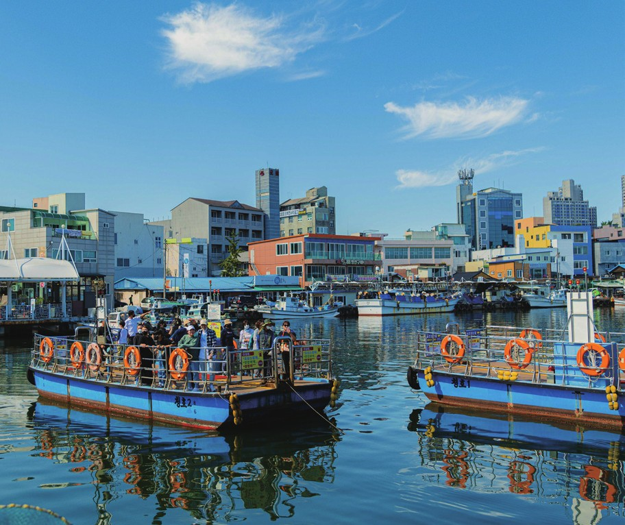
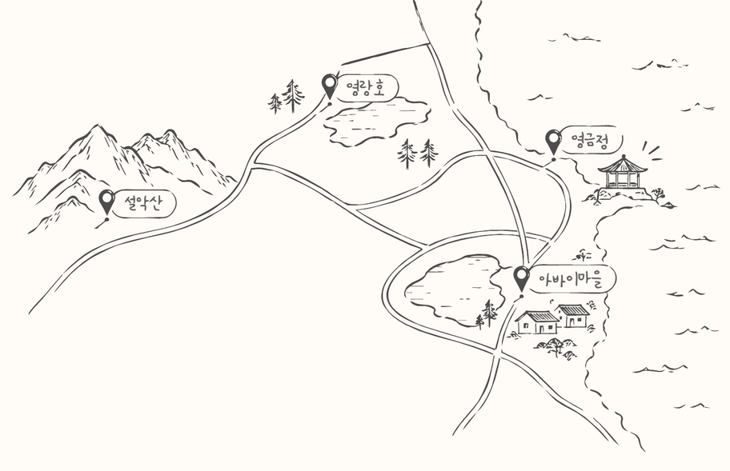

3줄 요약
- 설악산의 능선과 동해가 맞닿은 속초는 산과 바다, 호수와 골목을 하루 안에 만날 수 있는 도시다.
- 속초고성지사 직원들이 설악산 → 영랑호 → 영금정 → 아바이마을로 이어지는 네 곳을 직접 추천했다.
- 장소마다 직원의 추천 한마디와 추천 시간, 함께 가면 좋은 곳을 담았다.
설악산의 웅장한 능선과 푸른 동해가 맞닿아 있는 도시, 속초. 산과 바다, 호수와 골목이 가까운 거리에 어우러져 하루 안에서도 서로 다른 풍경을 만날 수 있는 곳이다. 이번 TRAVEL MATE에서는 속초·고성지사 직원들이 직접 추천하는 네 곳을 따라가본다. 설악산의 겨울 풍경부터 호수를 따라 걷는 산책길, 바다를 바라보며 잠시 쉬어가는 장소까지. 산에서 시작해 바다로 이어지는 속초 여행을 만나보자.

추천 장소 1. 설악산 속초에서 가장 먼저 만나는 풍경
속초를 이야기할 때 빼놓을 수 없는 설악산. 계절마다 다른 풍경을 보여주는 산은 겨울이 되면 한층 고요하고 선명한 모습으로 다가온다. 꼭 정상까지 오르지 않아도 좋다. 산을 바라보며 걷고, 잠시 멈춰 풍경을 바라보는 것만으로도 바쁜 일상에서 한 걸음 물러나는 시간이 된다.
MATE’S PICK
“시간이 많지 않은 날에도 설악산 쪽으로 드라이브를 가면 일상과는 다른 공기를 느낄 수 있어요. 산을 바라보는 것만으로도 기분이 한결 가벼워집니다.”
이렇게 가보세요
- 추천 시간
- 아침 또는 한적한 오후
- 추천 이유
- 산을 바라보며 잠시 일상에서 벗어나기
- 함께 가면 좋은 곳
- 설악산 소공원·설악향기로·상도문 돌담마을

추천 장소 2. 영랑호 호수를 따라 걷는 느린 산책
설악산의 풍경을 뒤로하고 조금 더 느린 여행을 하고 싶다면 영랑호로 향한다. 호수를 둘러싼 산책길을 따라 걷다 보면 물 위에 비치는 하늘과 설악의 풍경을 만날 수 있다. 특별한 목적지를 정하지 않고 그저 천천히 걷고 싶은 날에 잘 어울리는 곳. 산과 바다가 가까운 속초에서 조용히 걷고 싶을 때 찾기 좋은 곳, 영랑호.
MATE’S PICK
“영랑호는 목적지를 정해두지 않고 걷기 좋아요. 혼자 가도 좋고, 가족이나 동료와 이야기를 나누면서 천천히 한 바퀴 돌아도 좋습니다.”
이렇게 가보세요
- 추천 시간
- 여유로운 오후
- 추천 이유
- 호수를 따라 천천히 걷고 이야기 나누기
- 함께 가면 좋은 곳
- 범바위·영랑호수윗길

추천 장소 3. 영금정 파도 소리를 따라 만나는 속초의 바다
설악산에서 시작한 풍경이 바다와 만나는 곳에서 잠시 걸음을 멈춘다. 영금정은 바위에 부딪히는 파도 소리가 거문고 소리처럼 들린다는 데서 이름이 유래한 곳. 바다를 마주한 정자에 서서 파도와 수평선을 바라보면 복잡했던 생각도 잠시 내려놓게 된다.
MATE’S PICK
“속초에 살면서도 바다를 보러 갈 때가 있어요. 특별한 계획 없이 가서 바다를 보고 오는 것만으로도 충분히 기분 전환이 됩니다. 하루가 저물어가는 늦은 오후에 가는 것을 추천합니다!”
이렇게 가보세요
- 추천 시간
- 해 질 무렵
- 추천 이유
- 파도 소리를 들으며 바다 바라보기
- 함께 가면 좋은 곳
- 속초등대전망대·동명항

추천 장소 4. 아바이마을 속초의 시간을 따라 걷는 골목
속초의 바다와 자연을 만났다면 이번에는 사람들의 이야기가 남아 있는 마을로 향한다. 청초호와 동해 사이에 자리한 아바이마을은 실향민의 삶과 속초의 역사가 함께 남아 있는 곳. 좁은 골목과 오래된 풍경을 천천히 걸으며 자연뿐 아니라 속초라는 도시가 만들어온 시간까지 만나본다.
MATE’S PICK
“아바이마을은 그냥 음식만 먹고 돌아가기보다 골목을 천천히 걸어보는 걸 추천해요. 속초가 어떤 도시인지 조금 더 가까이 느낄 수 있어요.”
이렇게 가보세요
- 추천 시간
- 오후부터 해 질 무렵
- 추천 이유
- 골목을 걸으며 속초의 시간 만나기
- 함께 가면 좋은 곳
- 갯배·청초호변·아바이순대거리
